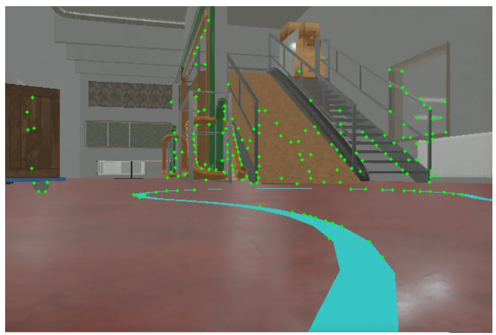
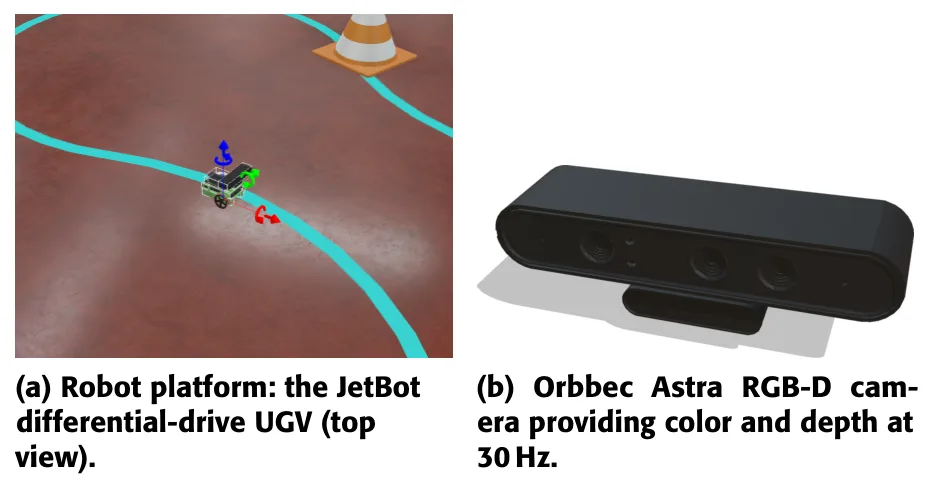
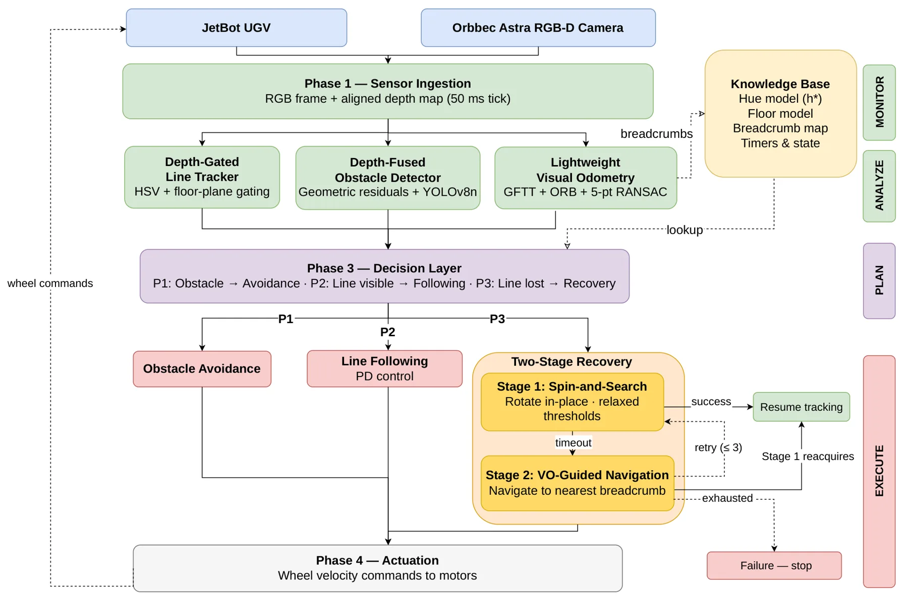
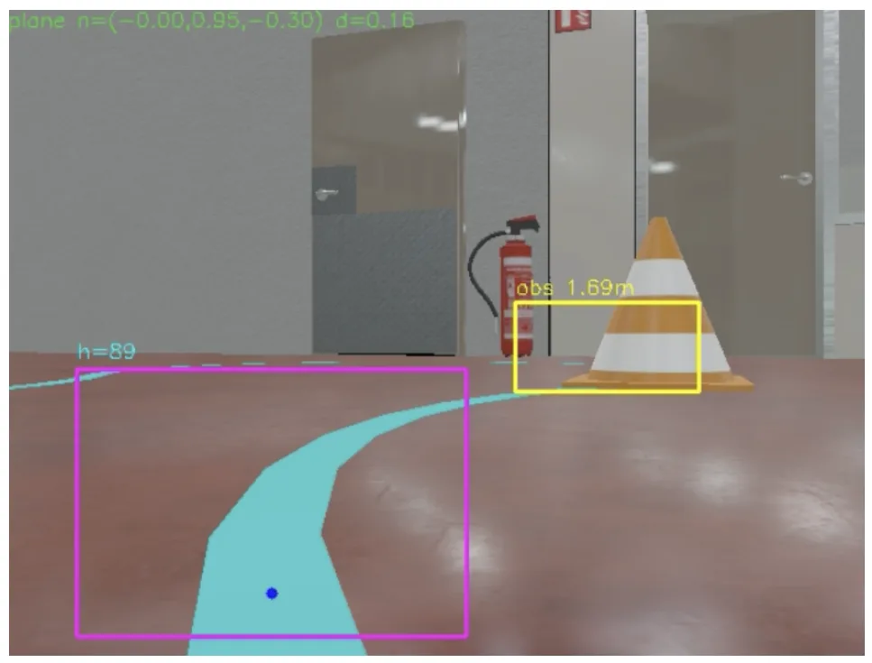

Self-Healing Visual Recovery：仅相机视觉里程计驱动的无人车自恢复Self-Healing Visual Recovery for Autonomous Ground Vehicles Using Camera-Only Visual Odometry
展示低成本 VO 的任务级容错用途和量化恢复结果；但仅有 Webots 仿真且不属于通用 SLAM，真实漂移和复杂环境鲁棒性待验证。
一句话工作总结
把单目 VO 作为循线机器人故障后的回退面包屑，在 CPU-only 20 Hz 控制环中实现两阶段自恢复。
摘要
本文为低成本循线无人地面车设计无需 LiDAR、GPS 或 GPU 的两阶段恢复机制。引导线丢失后，第一阶段让机器人原地旋转并逐步放宽颜色检查，通过多帧确认重新发现线路；若仍失败，第二阶段借助单目视觉里程计返回已保存的面包屑位置后重试。系统结合深度门控 HSV 循线、YOLOv8n 障碍检测和 VO 面包屑地图，在 CPU 上以 20 Hz 运行。119 个 Webots 故障注入 episode 中成功率为 86.6%，恢复时间中位数 3.26 秒。
Low-cost unmanned ground vehicles are often used in indoor places like warehouses, inspection corridors, and farm rows, where painted floor lines guide the robot. Line following is useful because it only needs one camera and little computing power, but it can fail when the line is blocked or turns sharply and goes out of view. Sensor-rich platforms tolerate this through hardware redundancy (LiDAR, GPS, multiple cameras), but camera-only systems must recover at runtime with no additional infrastructure. This paper presents a lightweight, two-stage recovery approach that restores guideline tracking without LiDAR, GPS, or a GPU. When the line is lost, the robot first turns in place while slowly relaxing its color checks and waiting for confirmation across multiple frames (Stage 1). If the line is still not found, monocular visual odometry moves the robot back to saved breadcrumb positions before it tries again (Stage 2). The system uses a depth-gated HSV line tracker, a YOLOv8n obstacle detector, and a visual odometry breadcrumb mapper, and it runs at 20 Hz on CPU-only hardware. The controller embeds a complete MAPE-K loop within a single 50 ms control tick, with no external adaptation manager required. The approach is evaluated across 119 fault-injected episodes on three Webots simulation courses. The method was successful in 86.6% of cases, with a median recovery time of 3.26 seconds. These results demonstrate that reliable visual recovery is feasible on camera-only UGVs within practical cost and computational limits.
中文解读摘录
图表/页面预览
{kind=link}

{kind=link}

{kind=link}

{kind=link}
